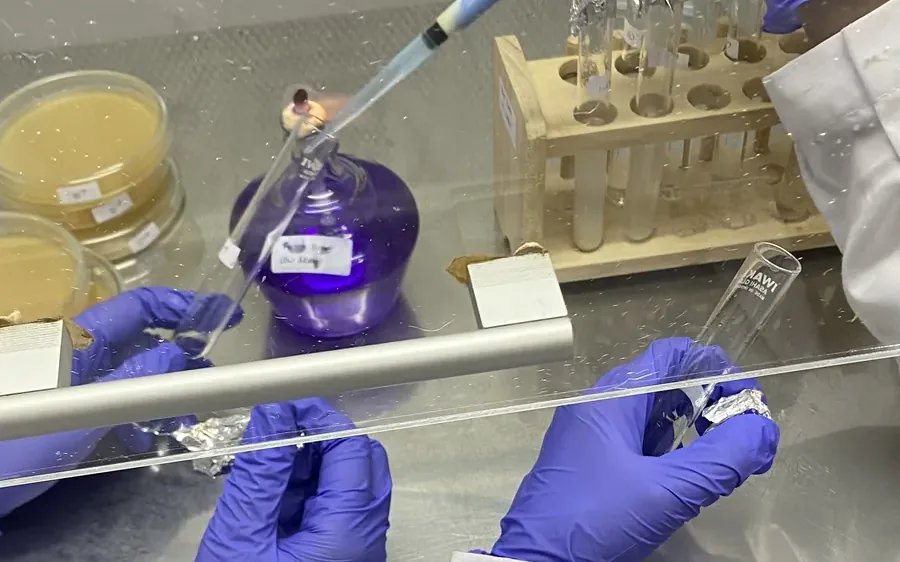
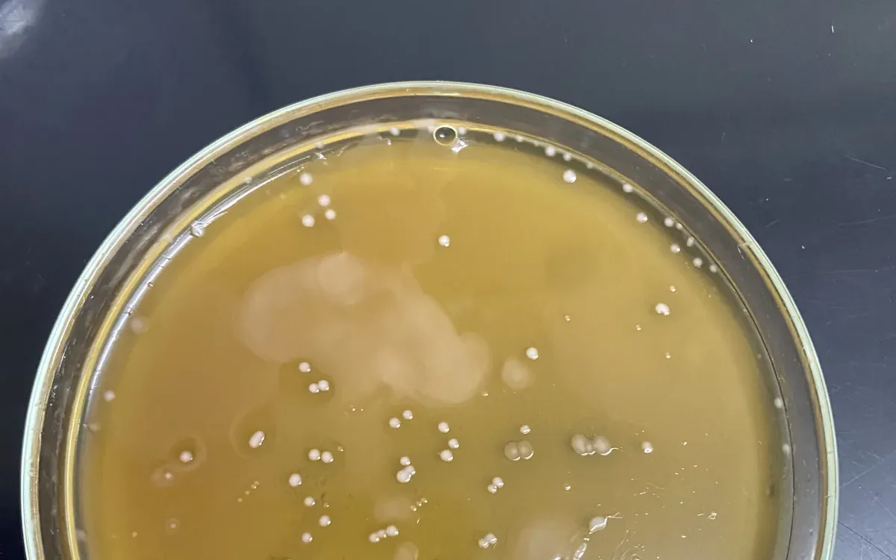
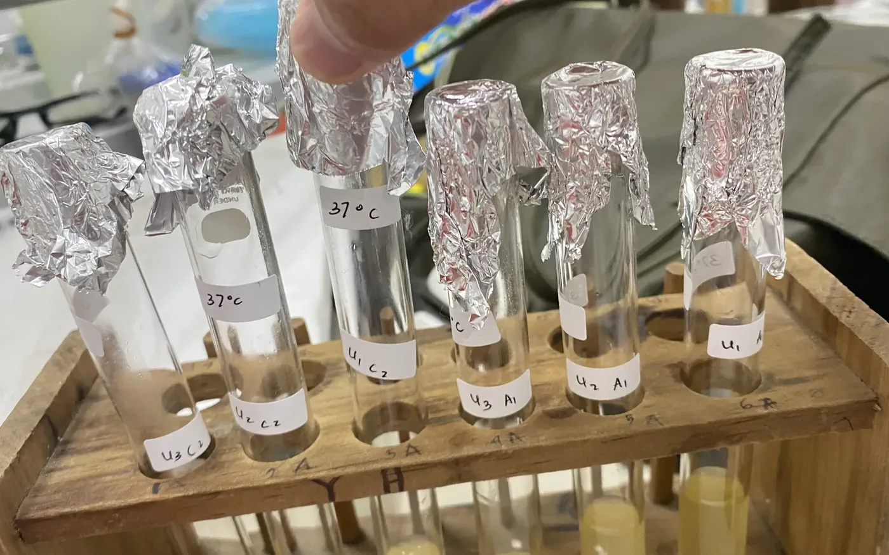
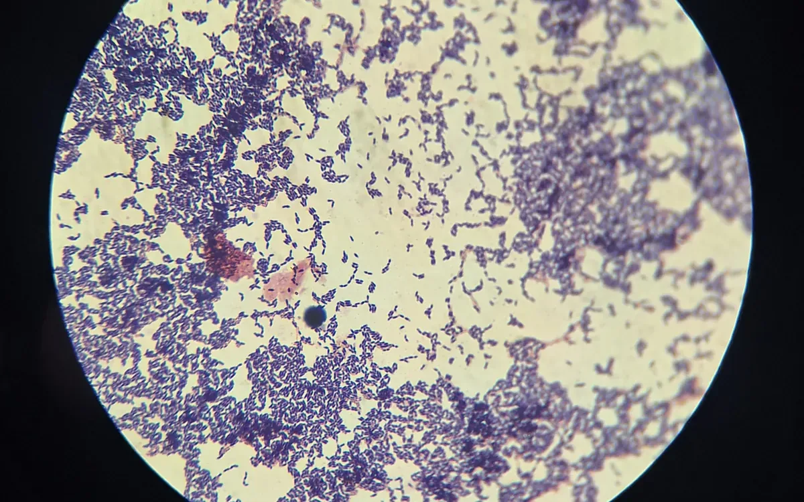
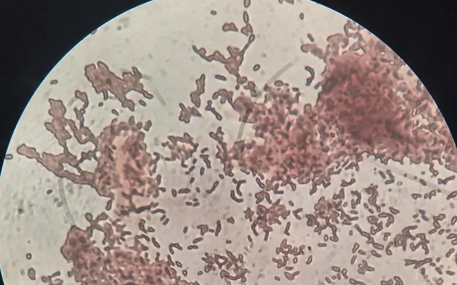
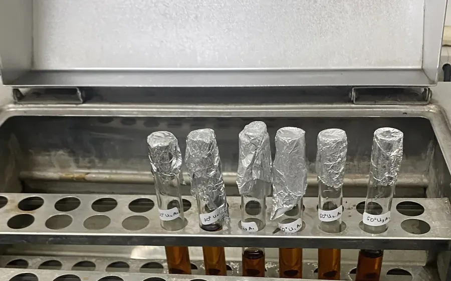
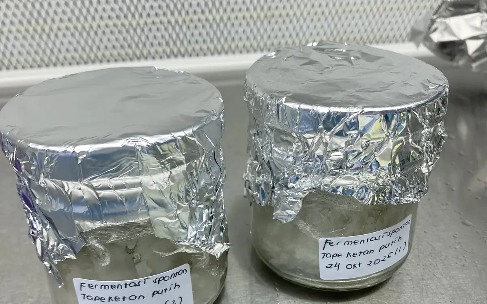
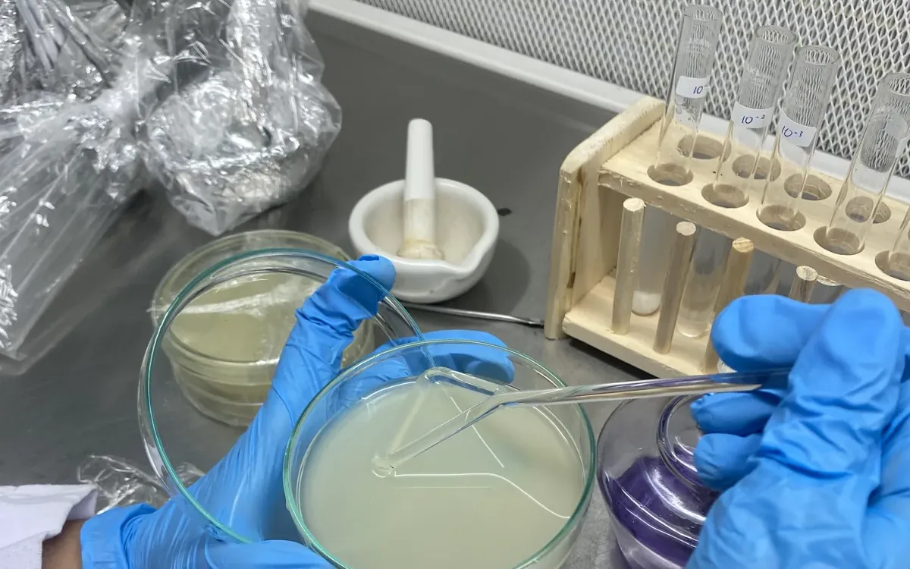

Latar & tujuan
Tape ketan adalah produk fermentasi tradisional yang melibatkan komunitas mikroba kompleks, didominasi Bakteri Asam Laktat (BAL). Penelitian ini mengisolasi isolat murni BAL dari tape ketan daun jambu air, lalu menguji respon pertumbuhannya terhadap dua faktor lingkungan utama pada proses produksi pangan: suhu dan kadar garam.
Tujuannya adalah menentukan toleransi stres isolat, yang menjadi dasar penilaian potensi aplikasinya sebagai kultur starter atau probiotik dalam industri pangan terfermentasi.
Identifikasi isolat dilakukan dengan MALDI-TOF MS, menghasilkan dua spesies dominan:
Pediococcus pentosaceus dan Leuconostoc mesenteroides.
Metode
- Isolasi & purifikasi — sampel tape ketan diencerkan berseri dan dikultur pada medium selektif untuk memperoleh koloni tunggal (single colony).
- Karakterisasi mikroskopis — pewarnaan Gram dan pewarnaan endospora untuk konfirmasi morfologi dan bentuk sel.
- Identifikasi — analisis MALDI-TOF MS untuk menentukan spesies isolat.
- Uji suhu — pertumbuhan isolat diukur pada 30°C, 37°C, dan 50°C.
- Uji salinitas — pertumbuhan isolat diukur pada kadar NaCl 4%, 6,5%, dan 18%.
- Analisis statistik — uji normalitas, uji homogenitas, ANOVA (dan Brown–Forsythe bila varians tidak homogen), dilanjutkan uji lanjut Duncan DMRT.
Hasil
Pertumbuhan dinyatakan sebagai densitas optik (absorbansi). Nilai di bawah adalah rerata tiga ulangan pada setiap perlakuan.
Pengaruh suhu — Pediococcus pentosaceus
| Perlakuan | Ulangan 1 | Ulangan 2 | Ulangan 3 | Rerata |
|---|---|---|---|---|
| 30°C | 0,992 | 1,044 | 0,936 | 0,991 |
| 37°C | 0,822 | 0,406 | 0,641 | 0,623 |
| 50°C | 0,403 | 0,402 | 0,455 | 0,420 |
Pengaruh suhu — Leuconostoc mesenteroides
| Perlakuan | Ulangan 1 | Ulangan 2 | Ulangan 3 | Rerata |
|---|---|---|---|---|
| 30°C | 1,243 | 1,257 | 1,040 | 1,180 |
| 37°C | 0,917 | 0,995 | 0,985 | 0,966 |
| 50°C | 0,518 | 0,501 | 0,354 | 0,458 |
Pengaruh kadar garam — Pediococcus pentosaceus
| Perlakuan NaCl | Ulangan 1 | Ulangan 2 | Ulangan 3 | Rerata |
|---|---|---|---|---|
| 4% | 0,366 | 0,439 | 0,965 | 0,590 |
| 6,5% | 0,222 | 0,296 | 0,126 | 0,215 |
| 18% | 0,051 | 0,173 | 0,029 | 0,084 |
Pengaruh kadar garam — Leuconostoc mesenteroides
| Perlakuan NaCl | Ulangan 1 | Ulangan 2 | Ulangan 3 | Rerata |
|---|---|---|---|---|
| 4% | 0,249 | 0,401 | 0,300 | 0,317 |
| 6,5% | 0,106 | 0,094 | 0,199 | 0,133 |
| 18% | 0,129 | 0,132 | 0,134 | 0,132 |
Interpretasi: pertumbuhan kedua isolat tertinggi pada 30°C dan menurun tajam
pada suhu serta salinitas tinggi. Pola ini khas bakteri mesofilik dan menunjukkan toleransi garam
rendah, yang menjadi pertimbangan formulasi pada produk fermentasi berkadar garam rendah.
Galeri proses







